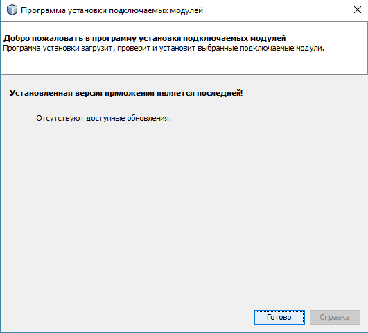

Описание меню "Справка"
Меню "Справка"
предназначено для вызова справочной системы приложения, проверки обновлений приложения и окна информации о приложении.
Внешний вид меню "Справка"
:
При выборе команды "Показать справку"
, просходит вызов справочной системы приложения.
Команда "Проверить обновления"
вызывает окно, в котором происходит проверка доступных обновлений приложения. Также при помощи данного окна
существует возможность установить найденные обновления приложения.
Окно "Программа установки подключаемых модулей"
:

Команда "О программе"
вызывает окно с описанием системной информации приложения.
Внешний вид окна "О программе"
: